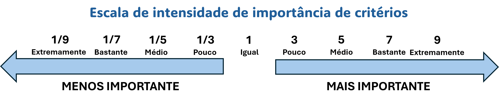

Sobre esta Etapa: Comparação Pareada
Nesta etapa, você irá comparar os critérios par a par utilizando a Escala de Saaty para definir a importância relativa entre eles.
Compare dois critérios por vez, indicando qual é mais importante e em que intensidade.
Os valores simétricos na matriz são calculados automaticamente. Exemplo: se A comparado a B = 3, então B comparado a A = 1/3.
Após preencher, o sistema calculará o índice de consistência (CR). Valores abaixo de 0,10 indicam comparações consistentes.
4Comparação Pareada
4.1 Escala de Intensidade de Importância
A Escala de Intensidade de Importância de Saaty é utilizada no método AHP para quantificar as preferências entre critérios durante a comparação pareada. Esta escala fundamental varia de 1 a 9, onde 1 representa igual importância entre dois critérios e 9 representa importância extrema de um critério sobre o outro. Os valores intermediários (3, 5, 7) representam níveis moderado, forte e muito forte de importância, respectivamente. Os valores recíprocos (1/3, 1/5, 1/7, 1/9) são utilizados quando o segundo critério é mais importante que o primeiro.
